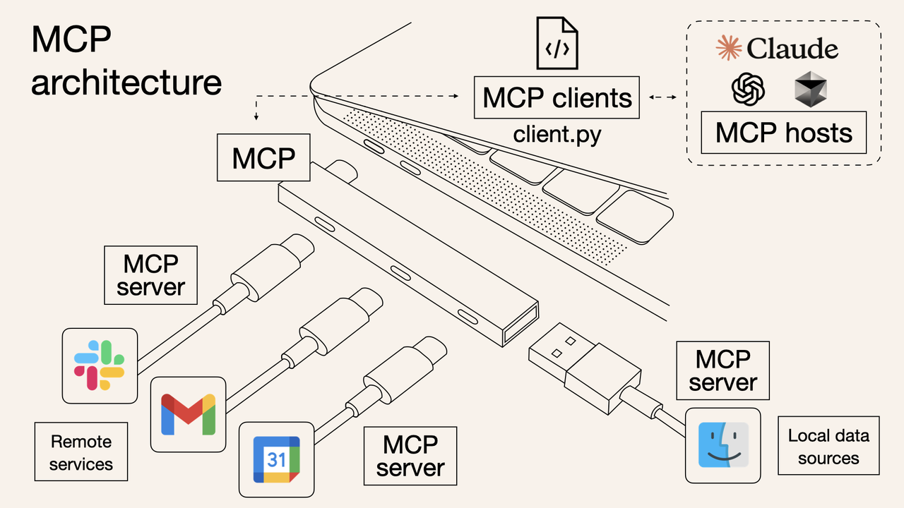
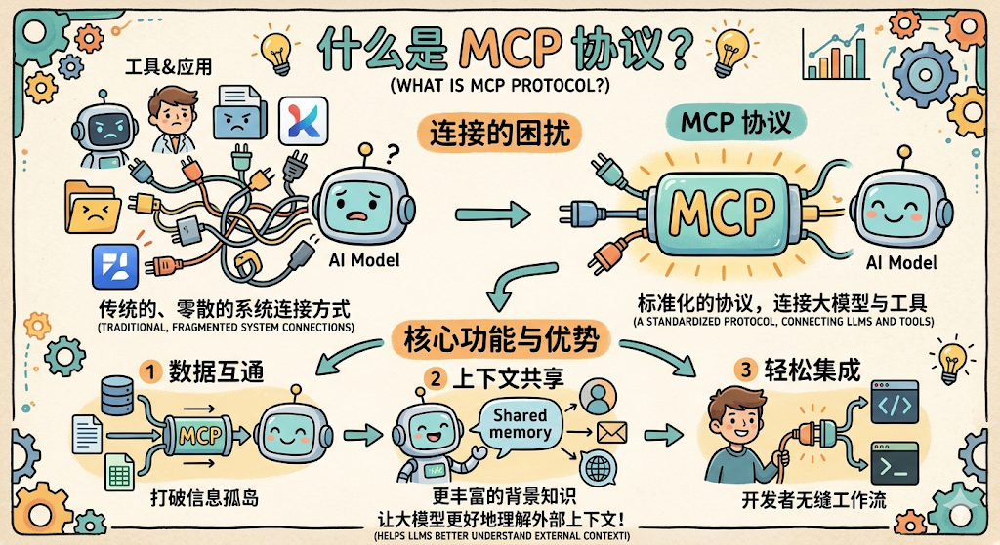
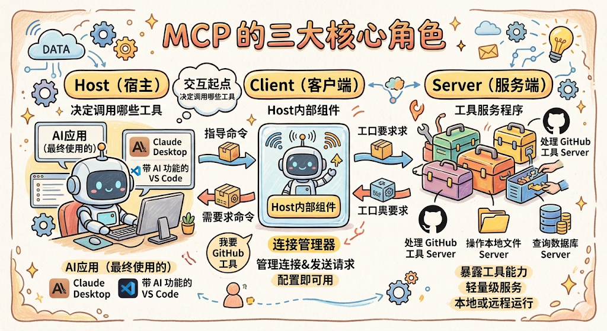
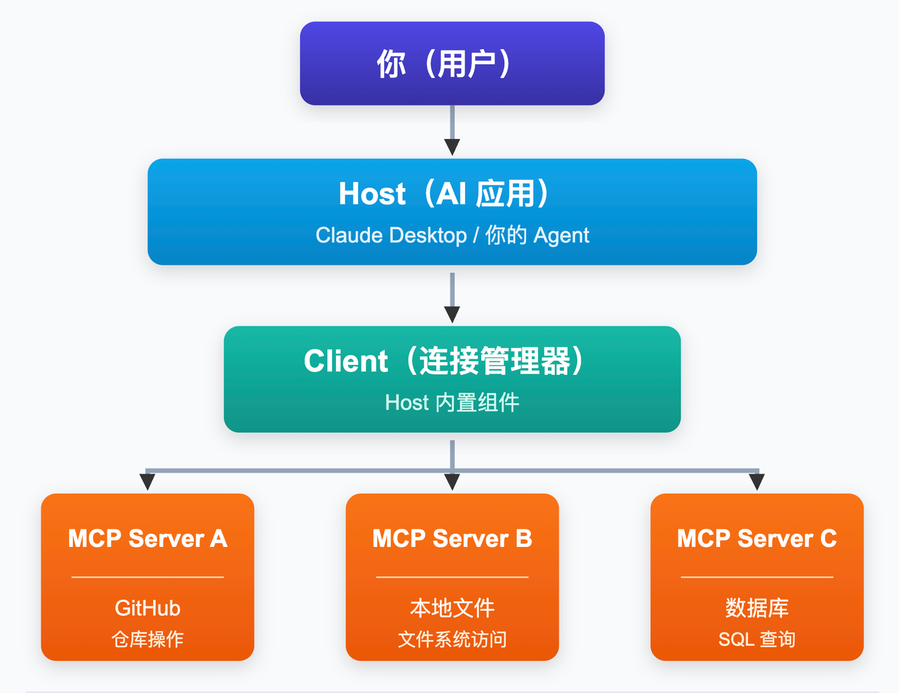
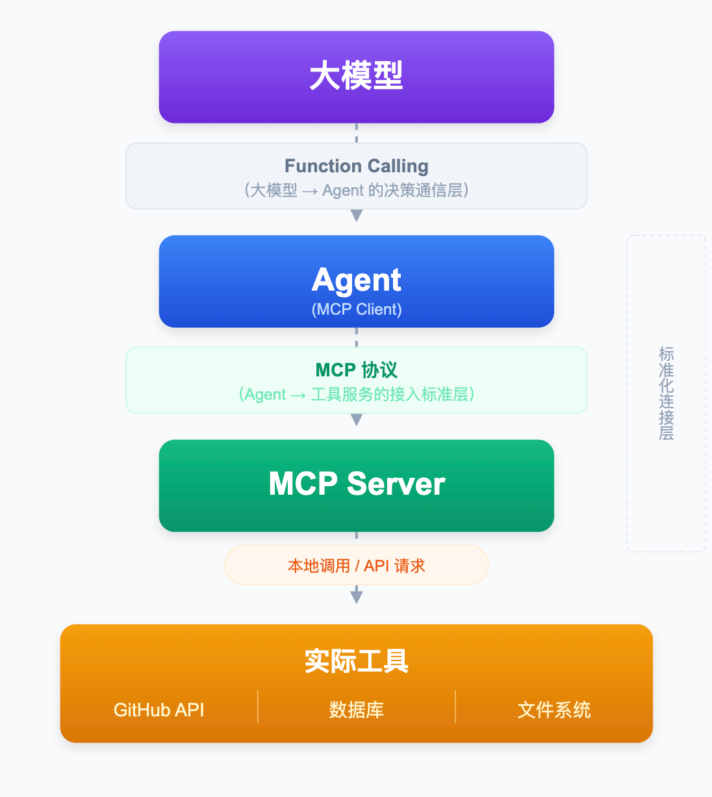
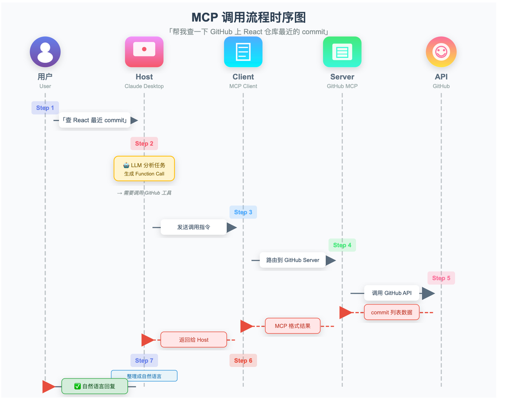

📌 本章重点总结（MCP）
- MCP 是什么：Anthropic 推出的开放标准协议（Model Context Protocol），定义了 AI 应用与工具服务之间的标准化通信方式，被誉为“AI 工具世界的 USB‑C”。
- 为什么需要 MCP：解决没有统一标准时，每个工具需单独集成、多模型场景下 N×M 套重复代码的问题。MCP 使工具写一次、全平台可用，将工作量降为 N+M。
- 三大核心角色：
- Host：用户使用的 AI 应用（如 Claude Desktop、VS Code），负责发起任务。
- Client：Host 内置的连接器，负责管理 MCP Server 的连接与请求路由。
- Server：暴露工具能力的轻量服务程序，负责实际执行工具。
- MCP Server 的三种能力：
- Tools（工具）：可主动调用的函数（发邮件、查数据库等），有副作用。
- Resources（资源）：只读的数据访问（文件、数据库记录等），无副作用。
- Prompts（提示模板）：预定义的可复用提示词模板。
- MCP 与 Function Calling 的关系：
- 配合关系，非替代。Function Calling 负责“大模型→Agent”的调用指令标准化；MCP 负责“Agent→工具服务”的连接与执行标准化。
- 两者在调用链中分工明确：Function Calling 说“调什么”，MCP 做“怎么找到并执行”。
- 核心价值：彻底解耦工具实现与 AI 调用决策，降低开发成本，促进生态共享。工具 API 升级只需更新对应 Server，所有 Host 自动受益。
为什么需要两者配合，缺一不可？
-
只有 Function Calling，没有 MCP：
大模型能说出“调用天气工具”，但 Host 还是要自己写代码去连接天气 API、处理各种工具的特殊协议。换一个工具又得重写，无法复用。 -
只有 MCP，没有 Function Calling：
Host 能通过 MCP 调用工具，但大模型输出的工具名和参数可能乱七八糟（比如“用 check_the_weather 工具，城市=上海明天”），Host 没法可靠地转换成 MCP 请求。 -
两者配合：
Function Calling 保证大模型说得准（工具名、参数格式都正确）。
MCP 保证 Host 找得到、调得对（按统一协议连接工具服务）。
大模型只管“说”，MCP Server 只管“做”，Host 只管“传”。各司其职，形成标准化流水线。
Function Calling 是“嘴”，大模型用它下指令；
MCP 是“手”，Host 用它去执行。
嘴说标准话，手干标准活，配合起来才高效。
上一章讲完了 Function Calling，大模型通过标准化的 JSON 格式，告诉 Agent 要调哪个工具、传什么参数。到这里，你已经理解了工具是什么、工具怎么被调用起来。
但实际开发 Agent 的时候，你会很快遇到下一个麻烦：工具集成本身，是个无底洞。
没有 MCP 之前：重复造轮子的噩梦
假设你正在开发一个 Agent，需要它能读取 GitHub 代码仓库、查询公司数据库、操作本地文件系统、还能发 Slack 消息。
每一个工具，你都得自己来：
- 自己研究这个工具的 API 文档
- 自己把 API 封装成函数
- 自己给每个函数写 Function Calling 定义（name、description、parameters）
- 自己处理认证、错误处理、数据格式转换
光这四件事，就够你忙好几天。更麻烦的是，这些集成代码只能用在你这个项目里，团队里其他同学做类似的 Agent，还得重新来一遍。
如果你的 Agent 还需要同时支持多个大模型（今天接 Claude、明天接 GPT-4、后天接 Qwen），问题就更大了：
10 个工具 × 5 个大模型 = 50 套集成代码
不同模型的 Function Calling 格式还可能有细微差别，你要针对每个模型写适配层。哪天 GitHub API 升级了，50 套代码你一个个去改，这还是基础设施代码，不是真正做产品该花时间的地方。
整个生态里，无数开发者都在重复做着同一件事：把 GitHub、Slack、数据库、文件系统……这些常见服务接入自己的 AI 应用。每个人写一套，互相之间完全无法复用。这就是没有统一标准时的现实，大家都在重复造同一个轮子。
MCP 的出现：给 AI 工具世界定一个标准
这就是 Anthropic 在 2024 年 11 月推出 MCP（Model Context Protocol，模型上下文协议） 的背景。
MCP 要解决的核心问题，可以用一句话概括：把工具的「写好」和「用起来」彻底拆开。

举个生活中的例子：在 USB-C 统一之前，各家手机厂商各有各的充电口，苹果用 Lightning、安卓早期用 Micro-USB，各品牌之间完全不兼容，出门得带三四根不同的充电线。USB-C 出来之后，只要设备支持 USB-C，任何 USB-C 的线都能用，充电器、数据线全部通用。
MCP 对于 AI 工具世界的意义，就和 USB-C 对于充电口的意义一模一样。

工具开发者只需要实现一套 MCP Server，把工具能力按 MCP 协议暴露出来，之后所有支持 MCP 的 AI 应用，都能直接接入，不需要任何额外适配。
AI 开发者只需要接入 MCP Client，就能调用整个 MCP 生态里所有已有的工具，不用自己写任何工具集成代码。
原来的 N×M 问题，变成了 N+M：N 个工具各写一次 MCP Server，M 个 AI 应用各写一次 MCP Client，然后任意组合，全部互通。
MCP 的三大角色
MCP 架构里有三个核心角色，弄清楚它们是谁、各自做什么，MCP 就说明白一大半了。

Host（宿主）
Host 就是你最终使用的那个 AI 应用，可以是 Claude Desktop、带 AI 功能的 VS Code、或者你自己开发的 Agent 程序。Host 是整个交互的起点，用户在 Host 里提问，Host 决定要调用哪些工具来完成任务。
Client（客户端）
Client 是 Host 内部的一个组件，专门负责管理和 MCP Server 的连接。你可以把它理解为一个「连接器」，Host 说「我要调用 GitHub 工具」，Client 就负责找到对应的 MCP Server、建立连接、发送请求、拿回结果。
每个 Host 通常会内置一个 MCP Client，你不需要自己开发，直接配置就能用。
Server（服务端）
Server 是对外暴露工具能力的轻量级服务程序。一个 MCP Server 通常负责一类工具，比如专门处理 GitHub 的 MCP Server、专门操作本地文件的 MCP Server、专门查询数据库的 MCP Server。
Server 和 Host 可以运行在同一台机器上（本地 Server），也可以部署在远程服务器上（远程 Server）。对于 Host 和 Client 来说，这些细节完全透明，调用方式完全一致。
三者的关系用一张图来看：

用户提问给 Host，Host 借助 Client 调用一个或多个 MCP Server，Server 执行完毕把结果回传，Host 拿到结果后给用户生成最终答案。
MCP 和 Function Calling 是什么关系？
学到这里，很多同学脑子里会冒出一个问题：上一章学了 Function Calling，说大模型通过 Function Calling 告诉 Agent 调哪个工具；这章又学了 MCP，说 Agent 通过 MCP 来调用工具。这两个东西，到底有什么区别？MCP 是不是把 Function Calling 给替代了？
完全不是。Function Calling 和 MCP 解决的是不同层面的问题，它们是配合关系，不是替代关系。 我们来一步步理清楚。
第一步：确认 Function Calling 工作在哪个层面
Function Calling 解决的问题是：大模型做出「要调这个工具」的决策之后，怎么把这个决策用标准化 JSON 格式传给 Agent。这是 大模型和 Agent 之间 的通信协议，负责「大模型怎么开口下指令」这一段。
第二步：确认 MCP 工作在哪个层面
MCP 解决的问题是：工具怎么被统一注册、统一发现、统一调用。这是 Agent 和工具服务之间 的连接协议，负责「Agent 怎么找到并执行工具」这一段。
第三步：看两者怎么配合
把两者放进整个调用链条，位置就一目了然：

Function Calling 负责上半段：大模型用 Function Calling 格式告诉 Agent「调哪个工具、传什么参数」。
MCP 负责下半段：Agent 通过 MCP 协议，找到对应的 MCP Server，把工具真正执行起来。
用一个具体例子把两者串联起来
还是查天气的场景，用户问「上海明天天气怎样」：
- 大模型通过 Function Calling 返回调用指令，「调 check_weather，city=上海」。这是 Function Calling 层，大模型在开口下指令。
- Agent 里的 MCP Client 收到这条 Function Calling 指令，通过 MCP 协议 找到天气 MCP Server，把请求路由过去。这是 MCP 层，Agent 在找到并执行工具。
- 天气 MCP Server 调用真实的天气 API，拿到结果，按 MCP 格式回传。
- 大模型收到结果，整理成自然语言告诉用户。
所以 Function Calling 是「说什么」的规范，MCP 是「怎么找到并执行」的规范。少了 Function Calling，大模型不知道怎么开口下指令；少了 MCP，Agent 不知道去哪里找工具来执行。两者分别在调用链的不同位置发挥作用，缺一不可。
MCP Server 的三种能力
一个 MCP Server 可以暴露三种类型的能力，分别对应 AI 在不同场景下的不同需求。
Tools（工具）
这是 MCP Server 最核心的能力，也是和上一章讲的工具概念最直接对应的部分。Tools 就是 AI 可以主动 调用执行 的函数，发邮件、查数据库、提交代码、搜索网页，都属于 Tool。
AI 调用 Tool 的机制，底层就是 Function Calling，MCP 在这之上做了一层标准化封装，让你不需要手写每个 Tool 的 Function Calling 定义，MCP Server 会自动按标准格式对外声明工具清单。
Resources（资源）
Resources 是 AI 可以 读取访问 的数据，文件内容、数据库记录、代码仓库、网页内容等。
Tools 和 Resources 的区别在于：Tools 是「做一件事」，有副作用，会改变外部状态；Resources 是「读一份数据」，只读，不会改变任何东西。这个区分很重要，因为 AI 系统通常对「会产生副作用的操作」需要更谨慎的权限控制，读数据和写数据，应该分开授权。
Prompts（提示模板）
Prompts 是预定义的可复用提示词模板。当你有一些常用的、固定结构的提示词（比如「代码 Review 模板」「会议纪要生成模板」），可以把它们封装成 MCP Prompts，在不同 Agent 项目里直接复用，不用每次重新写。
一次完整的 MCP 调用流程
用「帮我查一下 GitHub 上 React 仓库最近的 commit」这个任务，走一遍完整的 MCP 调用流程：

- 用户提问：在 Host（比如 Claude Desktop）里输入「帮我查一下 React 仓库最近的 commit」
- Host 分析任务：大模型判断需要调用 GitHub 工具，生成 Function Call 格式的调用指令
- Client 接收指令：Host 把调用指令交给内置的 MCP Client
- Client 路由到对应 Server：Client 根据工具名，找到负责 GitHub 能力的 MCP Server，把请求发过去
- Server 执行：GitHub MCP Server 调用 GitHub API，拿到最近的 commit 列表
- 结果回传：Server 把结果按 MCP 协议格式回传给 Client，Client 转交给 Host
- Host 生成回复：大模型拿到结果，整理成自然语言回复给用户
整个过程中，Host 和背后的大模型完全不需要知道 GitHub API 的任何细节，它只管说「我要调 GitHub 工具」，剩下的事情 MCP Server 全权负责。这就是「解耦」的价值：工具的实现细节，和 AI 的调用决策，完全分离。
一张表看懂：没有 MCP vs 有 MCP
| 对比维度 | 没有 MCP（自己写集成） | 有 MCP |
|---|---|---|
| 工具集成方式 | 每个工具自己写 Function Calling 定义、自己对接 API、自己处理格式 | 直接接入已有 MCP Server，工具现成可用 |
| 多模型支持 | N 个工具 × M 个模型 = N×M 套集成代码 | N 个工具 + M 个模型，各写一遍标准接口，任意组合 |
| 跨项目复用 | 几乎不可能，每个项目重新写一遍 | MCP Server 一次实现，所有项目直接接入 |
| 工具 API 升级 | 所有集成代码都要跟着改 | 只需更新对应的 MCP Server，所有 Host 自动受益 |
| 生态 | 各自为战，没有共享生态 | 全球开发者贡献 MCP Server，接入即可使用海量现成工具 |
| 开发成本 | 极高，大量时间花在工具集成而非业务逻辑上 | 极低，专注业务逻辑，工具接入开箱即用 |
总结
整理一下这一章的核心认知：
- MCP 是什么：Anthropic 推出的开放标准协议，定义了 AI 应用和工具服务之间如何标准化通信，是 AI 工具世界的「USB-C」。
- 为什么需要它：没有统一标准时，每个工具都要自己写集成，多模型场景下是 N×M 的重复工作量；MCP 把这个问题变成 N+M，工具写一次，全平台可用。
- 三大角色：Host（AI 应用）通过内置的 Client（连接器）调用 MCP Server（工具服务），职责清晰，完全解耦。
- 三种能力：Tools（可执行操作）、Resources（可读取数据）、Prompts（可复用模板），覆盖 AI 在工具调用场景下的所有需求。
后续章节呼应：
- RAG：解决「大模型看不到你私有数据」的问题，把知识库检索封装成工具，让 Agent 能随时访问私有知识，是 Agent 开发中最常见的能力之一。